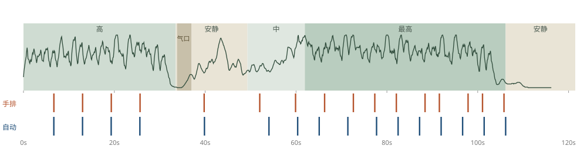
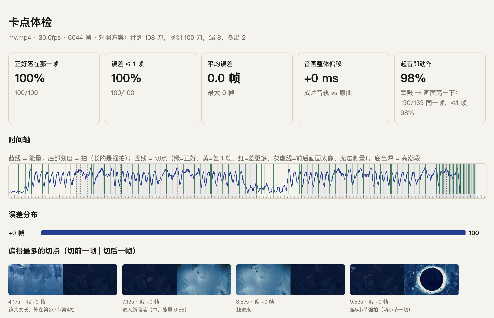

AI 管「画面怎么长」，音乐管「什么时候长、长多快」——
让一支 MV 的每一帧，都成为音乐的函数。
| 产品名称 | 小耳音乐卡点MV（Xiaoer BeatSync MV） |
| 主要形态 | Skill 包（给 AI Agent 调用的技能 + 一组命令行工具） |
| 当前版本 | v1.0（2026-11） |
| 创作者 | 小耳 · AI 艺术家、AI Builder 与 Creative Technologist |
| 开源地址 | https://github.com/Jane-xiaoer/xiaoer-beatsync-mv |
| 一句话 | 给一段音乐和一组画面素材，自动做出一支「画面跟着音符生长」的 MV：卡点精确到帧，并从成片逐帧体检。 |
| 谁 | 在什么环节 | 遇到什么问题 |
|---|---|---|
| AI 影像创作者、MV 导演 | AI 短片、音乐 MV 的后期：音画同步 | AI 能生成好看的镜头，但做成 MV 时画面和音乐「各走各的」；要让画面跟着音乐动，只能一段段手调变速。 |
| 剪辑师 | 节奏剪辑、预剪 | 找拍点、找乐句、决定哪里换镜全靠耳朵和手动打点，一首歌要来回听几十遍。 |
| 品牌与内容团队 | 音乐驱动的宣传片、社媒短视频 | 同一套素材要配不同的歌，每换一首就要重剪一遍。 |
来自我自己的作品。2026 年 9 月，我用很喜欢的动画片《凯尔经的秘密》的主题曲做了一支 MV：MJ 出关键画面，首尾帧图生视频做出 17 段「生长」与「变形」镜头，再让音乐推动每一段的播放速度。v7 定稿达到了我想要的样子——画面随每一个音符向前生长，音乐停下的地方，画面也停下等它回来。
但那一版是我作为导演逐段手排的：每段素材放在第几秒、在哪里换、气口怎么处理，都写在一张手工表里。做完无法复用，换一首歌就得重来。这个 Skill 就是把那次实践拆解成可复用的流程，让 Agent 按我的判断自动执行。
理解问题：卡点不只是「在拍上切」。音乐至少有三层——拍（每个音符的起点）、乐句（一句话的呼吸）、段落（整首歌的起伏）。好的 MV 三层都要对上：拍决定动作落在哪一帧，乐句决定在哪里换镜，段落决定整支片子的疏密和情绪。
核心方案：我把音乐拆成四个轨道，并且把这些轨道作为函数，控制到画面的每一帧——也就是说，每一帧都变成了以音乐为自变量的时间函数，以此实现最为精确的控制。这样得到的是一个完全符合音乐变化的视觉；因为精确到了每一帧，这种视觉是过去的 MV 不曾有过的。鼓、贝斯、人声、旋律的每一个起音，都在同一帧推动画面生长；没有声音的地方，画面停住、等音乐回来。
编排规则来自我作为导演手排定稿的判断，交给 Agent 自动执行；创作者只需决定选择喜欢的音乐，以及自己想要的画面。
| 功能 | 做什么、怎么实现 | 状态 |
|---|---|---|
| 分轨 | Demucs 拆成鼓 / 贝斯 / 人声 / 其他 4 轨（可选 6 轨）；分轨与原曲的时间偏移用互相关实测并自动补偿。 | 已实现 |
| 精确卡点 | 鼓轨上拟合恒定节拍网格（粗搜 0.02 BPM / 4ms，细搜 0.001 BPM / 1ms），用底鼓起音沿修相位；速度在变的歌自动切换为逐拍跟踪；倍速错误自动纠正。分出底鼓、军鼓、踩镲，以及贝斯、人声、旋律的起音。 | 已实现 |
| 结构分析 | 自相似矩阵 + 棋盘核找段落，结合能量台阶、乐器进出；识别气口（音乐骤停）；每个点给置信度，低置信度的点不当硬卡点。 | 已实现 |
| 凯尔经模式 | 输入歌 + 按顺序排好的生长 / 变形片段 → 动态规划自动编排 → 凯尔经公式逐帧推播放头 → 1080p 出片。支持对照手排方案、直接使用手排方案。 | 已实现 |
| 剪辑模式 | 普通素材按三层规则剪；底鼓推镜、军鼓闪光、贝斯光呼吸、人声贴近、旋律推画面；每一刀写明理由。 | 已实现 |
| 导出到剪辑软件 | Premiere / DaVinci（FCP7 XML）、Final Cut（FCPXML 1.10）、标记点 CSV：镜头入出点精确到帧，段落 / 乐句 / 强拍 / 重音 / 气口作为标记。 | 已实现 |
| 卡点体检 | 从成片 mp4 逐帧解码，用相邻帧相关性找真实切点（闪光、推拉不误判）；量每一刀差几帧、军鼓是否同帧出动作、音画是否偏移；出 HTML 报告。 | 已实现 |
| 自动生成素材库 | 根据锚点图自动排出首尾帧组合、写提示词、批量调用图生视频接口。 | 规划中 |
| 中文歌词逐字对齐 | 人声起句已用于切点；逐字对齐目前只有英文方案。 | 规划中 |
| 剪映导出 | 目前给剪映用户的是标记点清单。 | 规划中 |
# 1. 安装（需要 macOS / Linux、Python 3.10+、FFmpeg；Apple Silicon 自动用 GPU 分轨） git clone https://github.com/Jane-xiaoer/xiaoer-beatsync-mv && cd xiaoer-beatsync-mv ./install.sh # 2. 听歌：分轨 + 卡点（3 分钟的歌约 30 秒） ./beatsync.sh analyze 歌.mp3 -o work/歌.cues.json # 3a. 凯尔经模式：素材按故事顺序给（mp4 或补帧后的帧序列文件夹） ./beatsync.sh kells work/歌.cues.json 片段1.mp4 片段2_morph.mp4 … --audio 歌.mp3 -o work/mv.mp4 # 3b. 剪辑模式：一条龙出片 + 导出时间线 + 体检 ./beatsync.sh make 歌.mp3 素材文件夹/ -o work/ # 4. 体检任意成片（包括在剪映 / PR 里剪好的片子） ./beatsync.sh check 成片.mp4 --cues work/歌.cues.json
在 AI Agent 里用：把仓库放进 Claude Code / Codex 的技能目录，直接说「给这首歌做个卡点 MV，素材在这个文件夹」。Agent 读 SKILL.md，按素材自动选模式，交付前必须跑体检，并把用了什么模式、关键切点为什么在那里、体检数字一起汇报。
morph / 变形 的会被当作变形片段。plan.json 里的起止时间，再用 --use-plan 重出。输入：《凯尔经的秘密》主题曲 What Are You Doing In My Forest（121.5 秒）+ 17 段 MJ 出画、首尾帧图生视频生成的生长与变形片段（按故事顺序）。过程：全自动，不看我当年的手排表。输出：1080p 成片，渲染用时 67 秒（Apple M5）。
全自动版成片截帧（3s / 16s / 30s / 45s / 64s / 88s / 100s）。

| 验证项 | 结果 | 怎么量的 |
|---|---|---|
| 自动编排 vs 导演手排 | 16 个切点中 11 个在 1 拍以内；开头 5 个（含气口处理）与手排差 0–2 帧 | 同样 17 段素材、同样顺序，逐个比切点 |
| 推播放头复现 | 素材帧号误差 0–3 帧（96fps 素材，即 0.01–0.03 秒） | 用手排表 + 当年分析数据重渲，逐帧比对成片取的是素材第几帧 |
| 渲染精度 | 切点 100% 落在计划的那一帧；军鼓「起音即动作」98% 同帧；音画偏移 0ms | 卡点体检：从成片 mp4 逐帧量 |
| 拍点准确度 | F 值 0.90（±70ms），平均误差约 10ms，87% 在 1 帧内 | 24 首节拍已知的合成曲（直拍、摇摆、人手误差、速度漂移），MIREX 标准；分析程序看不到答案 |
| 鼓轨网格拟合 | 鼓点落在拍上的比例 74% → 95% | 同一首歌（Funkorama），分轨后在鼓轨上拟合网格 vs 普通逐拍跟踪 |
| 导出时间线 | 镜头入出点 92/92 全部对上 | 用 OpenTimelineIO 独立解析导出的 XML / FCPXML |

| 体验入口 | GitHub 开源仓库 https://github.com/Jane-xiaoer/xiaoer-beatsync-mv（MIT），README 与 SKILL.md 内有完整说明；现场可实时演示：给一首歌，几分钟内出片与体检报告。 |
| 运行条件 | macOS（Apple Silicon 推荐）或 Linux；Python 3.10+；FFmpeg；首次分轨会下载 Demucs 模型（约 300MB）。 |
| 模型 / 接口依赖 | 全部在本机运行，不需要任何付费 API。画面素材由创作者自备（可用任意图生视频工具生成）。 |
| 费用 | 工具本身免费；素材生成的费用取决于创作者选用的图生视频服务。 |
小耳 · 1075152691@qq.com · github.com/Jane-xiaoer